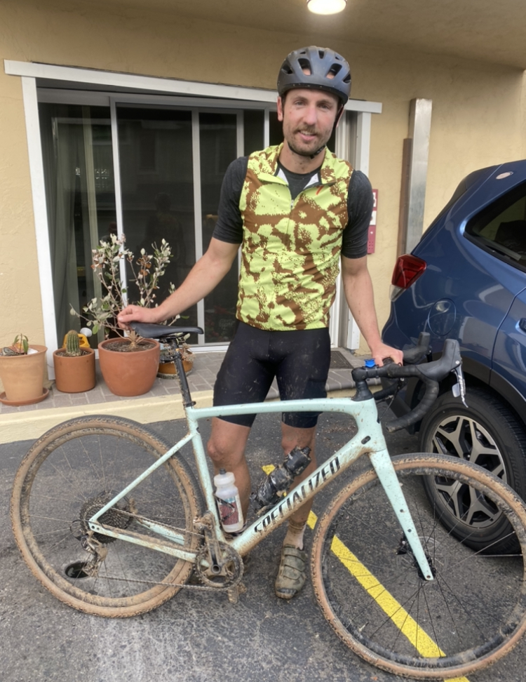
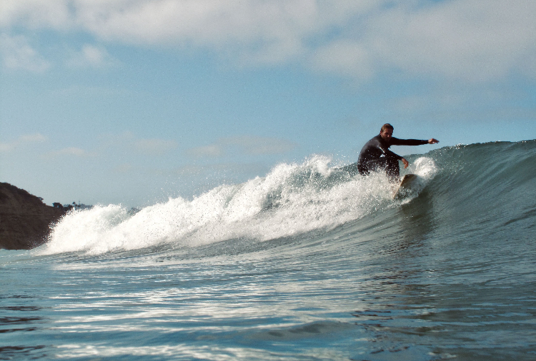
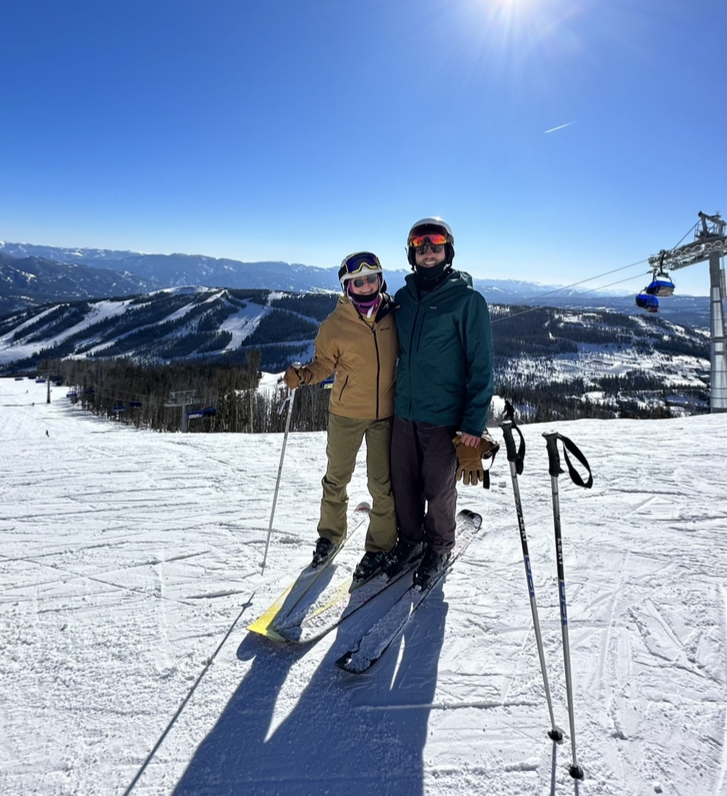
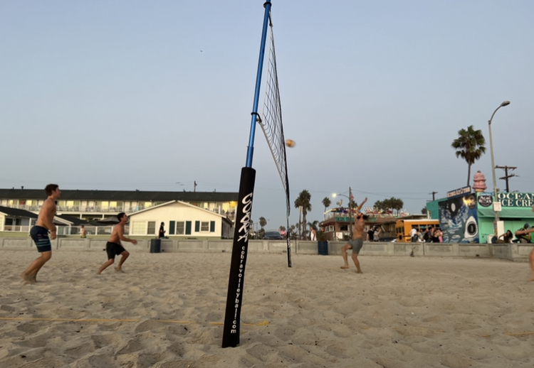

Hobbies
Living in Southern California makes it easy to have so many different outdoor hobbies. Below are just a few of my favorite things to do here in San Diego.
hiking

cycling

surfing

skiing

beach volleyball
Skills
As the wise Napoleon Dynamite once said You know, like nunchuck skills, bowhunting skills, computer hacking skills... Girls only want boyfriends who have great skills.
Sadly I don't own any nunchucks, BUT I do have the following...

-
Front-End Skills:
- HTML
- CSS
- JavaScript
GitHub showcases everyting I've done up to this point in my career. Click the photo to check out some of my latest repositories!